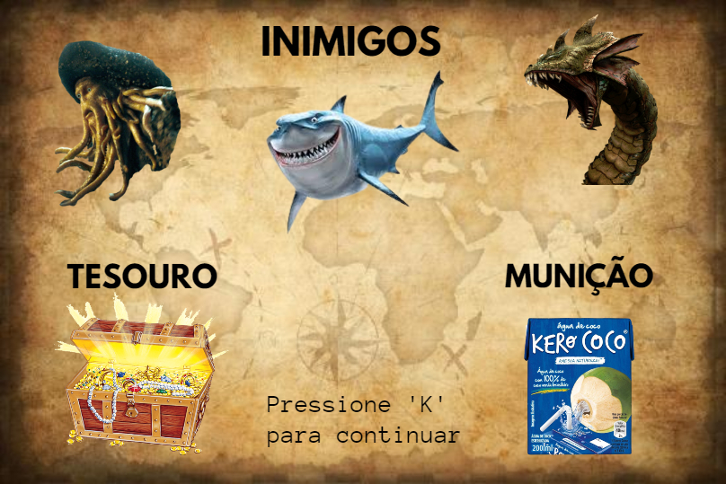

Bora Yara
Jogo

História
Yara é uma sereia que ama tesouros, um belo dia ela descobriu um lugar mágico cheio de tesouros. Na entrada do lugar ela achou uma caixa de água de coco, ao tocar na caixa ela ganhou um coco. Ela tacou em um bicho que viu e o bicho saiu correndo, então ao descobrir o segredo do coco ela partiu em buscas de tesouros, pórem ela tinha que ser rápida.
Gameplay
'w' e 's' para movimentar para cima e para baixo, e 'j' para lançar os cocos. Colete o máximo de tesouros até o tempo acabar.
Intruções
